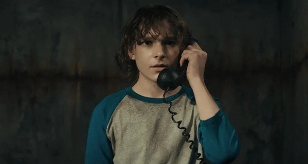
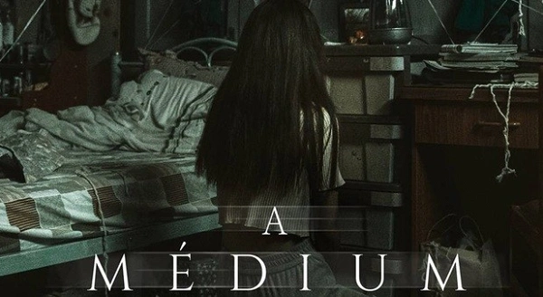
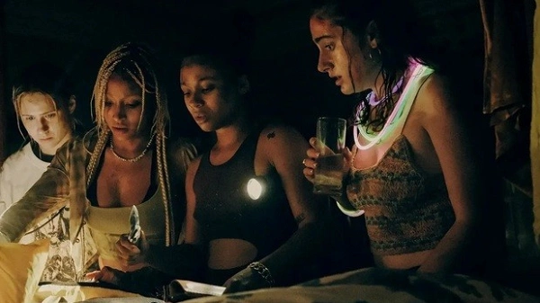

Quais são os 5 melhores filmes de terror de 2022
tá com dificuldade de encontrar um filme de terror para assistir?
fica tranquilo você tá no lugar certo, você acabou de achar a melhor listar
com os 10 melhores filmes de terror de 2022
1° BARBARIAN
Considerado um dos melhores filmes de terror de 2022, Barbarian
conquistou incríveis 92% de aprovação dos críticos no site Rotten Tomatoes.
A trama se passa em um bairro distante no subúrbio de Detroit, onde
a jovem Tess Marshall aluga uma casa. Para sua surpresa, um homem chamado Keith
também alugou o imóvel por meio de outro aplicativo. Com uma tempestade iminente
e sem poder pagar um hotel, ela decide dividir o local até que se resolva a confusão.
No dia seguinte, ao investigar casa, Tessa descobre a existência de uma espécie de
cativeiro sinistro e secreto. A partir daí, o título do filme se justifica com cenas
de violência explícita, abusos, mortes e mais. Contudo, o longa não usa apenas isso
para alcançar o terror que tanto agradou o público e a crítica. Um dos pontos
destacados, inclusive, é o roteiro inovador e a forma como as cenas se desenvolvem, causando
uma ansiedade no espectador para ver o que acontecerá a seguir.
2° A Órfã 2: A Origem
Este filme é um prelúdio do longa A Órfã (2009), que nos apresentou a Leena Klammer, uma mulher
adulta que tem um tipo de nanismo que a possibilita se passar pela criança Esther. O novo filme
acompanha o momento em que Leena foge do Instituto Saarne, uma clínica psiquiátrica na Estônia.
Antes dos acontecimentos do longa original, a mulher ainda aterrorizou outra família, passando-se
pela filha perdida do casal Tricia e Allen Albright, já na América do Norte.
Allen acredita que se trata de sua filha, mas Tricia não se deixa convencer. Enquanto isso gera problemas
entre o casal, Tricia consegue descobrir o passado de Leena, sua verdadeira idade e sua macabra história.
A descoberta desperta a ira de Leena, que se torna violenta e perigosa. Para a surpresa dos fãs da franquia,
este segundo filme foi amplatamente elogiado, agradando os críticos e o público.
3° O Telefone Preto

Com apenas 13 anos, Finney Shaw acaba sendo sequestrado por um assassino sádico, que usa uma máscara aterrorizante.
Ele mantém Finney preso em seu porão à prova de som, deixando o menino sem quaisquer esperanças de escapar.
O que os dois não esperavam era que um telefone preto desconectado que existia no porão tocasse para Finney.
Sem que entenda como é possível, o jovem pode ouvir no telefone as vozes e os conselhos das vítimas anteriores
do assassino. O trabalho do roteirista C. Robert Cargill, do diretor Scott Derrickson e do protagonista
Ethan Hawke foi muito elogiado, bem como a atmosfera aterrorizante que permeia quase todas as cenas do longa.
4° A Médium

Embora este filme tailandês sul-coreano tenha chegado aos cinemas da Coreia do Sul em 2021, a estreia
mundial aconteceu em maio de 2022. A obra traz de volta o gênero "found footage", apresentado ao mundo
pelo longa Holocausto Canibal (1980) e tão popularizado por filmes como A Bruxa de Blair e Atividade
Paranormal.
A trama segue Nim, uma experiente médium que recebe uma equipe de documentaristas em sua casa em Isan, na
Tailândia. Ao documentário, ela apresenta sua rotina de curas espirituais a partir da entidade Bayan, com
quem tem contato desde sua juventude. A trama que se segue, contudo, traz surpresas para os espectadores,
outros personagens importantes, cenas gráficas e perturbadoras. Ah, e o longa ainda conta com referências
a outras grandes obras do terror, como O Exorcista e REC.
5° Morte Morte Morte

Este filme chamou a atenção do público pela mistura dos estilos slasher, humor ácido e mistério em uma
produção de terror. Na trama, sete jovens decidem realizar uma festa em uma mansão remota. Embora os ânimos
já estivessem alterados, o grupo começa a brincar com um jogo estilo "detetive" chamado de Morte Morte Morte.
Após a disputa no jogo causar discussões entre todos eles, os jovens são surpreendidos com uma assassinato
real na casa. Agora precisam se unir, em meio a desconfianças, para descobrir de fato quem é o assassino
entre eles.